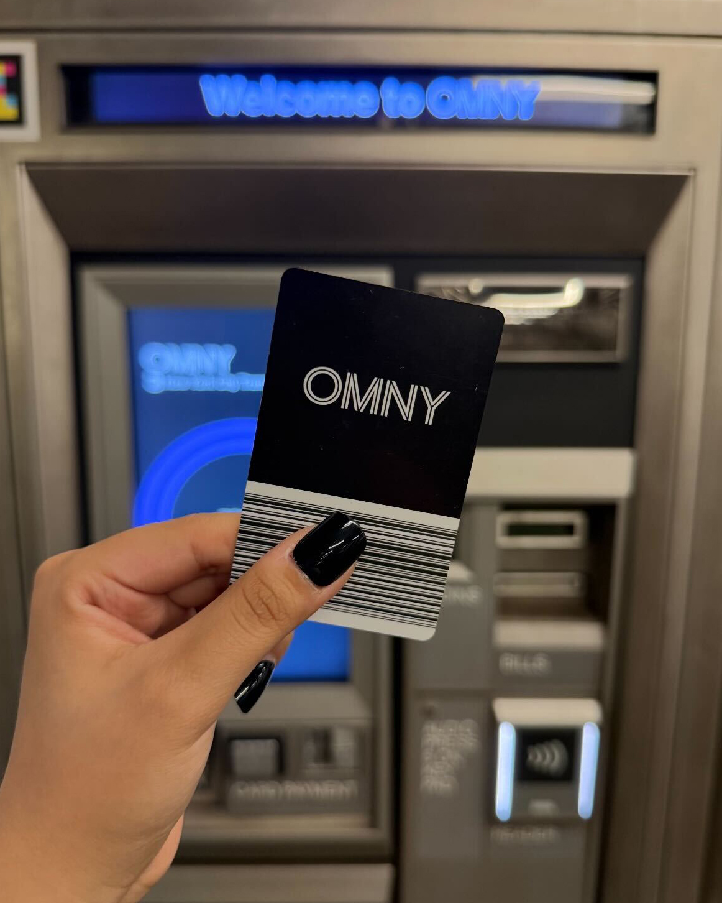

In March of this year, the MTA announced that the 32-year-old MetroCard would be reaching its expiration date on Dec. 31, leaving the new One Metro New York, referred to as OMNY, system as the sole method to access subways and buses in New York City.
The tap-and-go only payment system the MTA is asking New Yorkers to embrace was first introduced in 2019 to select stations and has been adapted by every subway station and bus over the last several years. This allows riders to tap their debit or credit card instead of using a MetroCard to pay for the bus or subway. This also included phone pay systems like Apple Pay or Google Wallet.
For riders who wanted to use a physical transportation card similar to the MetroCard, the MTA introduced the OMNY card which could be purchased at retailers across New York City and at OMNY vending machines. According to the MTA over 85% of subway stations have at least one OMNY refill machine. In July, 399 of the 472 subway stations had at least one OMNY machine installed. That number is expected to reach 100% by the end of the year.
The MetroCard debuted in 1993 and will no longer be sold and distributed after Dec. 31 and its last day to be accepted in 2026 has not yet been announced. This means that cards will no longer be able to be purchased or refilled after Dec. 31 but that deadline has moved up for a lot of New Yorkers who are finding it difficult to refill their MetroCards once their machines have been removed from their subway stations. Some current stations that still have their MetroCard machines are major transit hubs like Times Square-42nd St., Port Authority-42nd St., 34th St.-Penn Station. and 34th St-Herald Square.
Riders around NYC are complaining of having to search around for stations that still have MetroCard machines. A Reddit page has become a community resource for New Yorkers to learn what stations still have MetroCard machines. People feel as if they are being forced to adopt OMNY before the expiration date in December. This transition also includes the conclusion of the weekly and monthly unlimited MetroCards. Instead the new OMNY program makes all rides free after the 12th time a card is used in a one week period.
In installing the new OMNY machines the MTA is also removing the MetroCard machines that have been in use for decades. The machines have become the sole way to add money to a MetroCard ever since the MTA decided to phase out all station attendants over the last 10 years. Once the last MetroCards distributed expire, that will be the end of the iconic yellow and blue card.
Photo Credit: Metropolitan Transit Authority
Icon Credit: Google Icons